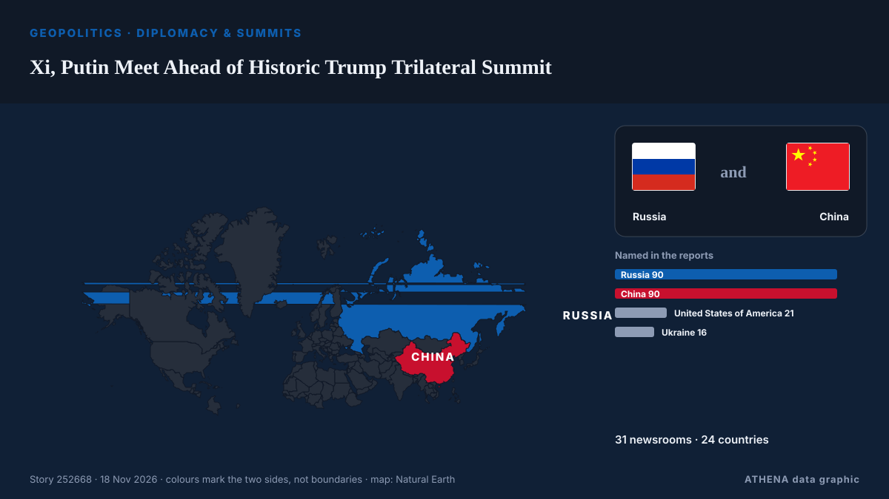

Géopolitique, politique et sécurité
SponsoriséPrésenté par  Cybernetics and Artificial Intelligence Lab Welcome to the Cybernetics and Artificial Intelligence Laboratory, established at the Department of Business Administration of the National and Kapodistrian University of Athens. The lab is headed by Professor Dimitrios Thomakos. The lab aims to do research that can be published in top venues. Our research uses tools and methods of Artificial Intelligence, and lies in the following areas: - Forecasting - Decision making - Cyber security - Finance We are always looking forward to collaborating with exceptional students!
Cybernetics and Artificial Intelligence Lab Welcome to the Cybernetics and Artificial Intelligence Laboratory, established at the Department of Business Administration of the National and Kapodistrian University of Athens. The lab is headed by Professor Dimitrios Thomakos. The lab aims to do research that can be published in top venues. Our research uses tools and methods of Artificial Intelligence, and lies in the following areas: - Forecasting - Decision making - Cyber security - Finance We are always looking forward to collaborating with exceptional students!
Les titres sont affichés en anglais, tels que publiés.

Diplomatie et sommetsXi, Putin Meet Ahead of Historic Trump Trilateral Summit
Xi Jinping and Vladimir Putin meet in Shenzhen ahead of a historic summit with Donald Trump, with Ukraine, Iran, nuclear disarmament and global trade expected to feature in discussions. de Kyiv Post
| 5 nov. | 327 |
|---|---|
| 6 nov. | 227 |
| 7 nov. | 211 |
| 8 nov. | 200 |
| 9 nov. | 317 |
| 10 nov. | 287 |
| 11 nov. | 261 |
| 12 nov. | 265 |
| 13 nov. | 223 |
| 14 nov. | 179 |
| 15 nov. | 197 |
| 16 nov. | 267 |
| 17 nov. | 201 |
| 18 nov. | 29 |
Iranian army says drone strikes targeted US installations at Kuwait air base
US strikes Iranian missile launch site on Qeshm Island in 'self-defence' de Express Tribune
Trump warns Iran over report of ‘dirty bomb’ plot
President Trump warned the Iranian regime after a report that Iran was planning a ‘dirty bomb’ attack in Washington. de NBC News (World)
Ukraine’s attack on Kerch Bridge is a major blow to Putin and Russia’s control of Crimea
The Kerch Bridge connecting Crimea and Russia is crucial for Moscow, both logistically and symbolically. de The Independent
Israel elects new parliament speaker in blow to Netanyahu
Israel’s parliament voted on Tuesday to select a new speaker opposed to the agenda of Benjamin Netanyahu, a potential first step in rolling back the prime minister’s divisive political agenda even as… de Cyprus Mail
Russian Military Plane Crashes in Siberia, Killing 19
A Russian military transport aircraft crashed in Siberia, killing all 19 people on board, after a suspected technical failure, the Defence Ministry said. de Khaama Press
Widespread outages hit banks, air travel, the NSA and Apple, disrupting seemingly everything
Major outages showcase the risks of interconnected tech in the age of AI. de CNBC World
Ireland shouldn't give €25m to Ukraine when its electricity is 75% cheaper- Independent Ireland
Last week, the government committed another €25 million to Ukraine’s energy fund. de Irish Mirror
Saudi-led coalition says it intercepted Houthi cruise missile targeting Riyadh
Coalition spokesman says cruise missile destroyed, provides no further details. de Anadolu Agency (English)
UK sanctions eight Israeli firms over West Bank settlements
The UK has sanctioned eight firms building Israeli settlements in the West Bank. de Sky News (World)
Ukraine, Russia hit key bridges ahead of Putin-Xi-Trump summit
Ukraine struck the Crimean Bridge for the second night in a row on Tuesday, shutting it down, while Russia hit two major bridges in Kyiv. de Free Malaysia Today
Iran targets US radar in Bahrain
Iran's Revolutionary Guard says it destroyed a U.S. early warning radar in Bahrain, marking the first such claim in months. de ABC News (International)
Trump praises Albanese as Quad unveils defence and minerals deals
With major talks in China approaching, US President Donald Trump, Anthony Albanese and their fellow Quad leaders deepen cooperation on defence and technology at a summit in Manila. de ABC News Australia
Vance’s midterm blame game hits snag as Trump’s own Israel ambassador disputes key claim
Mike Huckabee rejects JD Vance's claim that Israel cost Republicans the midterms, blaming voter apathy and low evangelical turnout for the GOP defeat. de Fox News (World)
Russia says French troops in Ukraine a ‘direct participation’ in war
A source said the mission of French troops excludes any combat role. de Euractiv
Ghalibaf warns dams near US bases are "dual-use" too
Shafaq News- Tehran Iranian parliament speaker Mohammad Bagher Ghalibaf warned on Tuesday that, under the same logic used to describe dams near Iranian missile sites as “dual-use,” dams, ports and… de Shafaq News (English)
After Yemen setback, Saudi Arabia replaces military commander
Riyadh’s Yemeni allies were forced to withdraw from swathes of territory in a major setback for their campaign against the group. de The Straits Times
Oman, Iran Discuss Safeguarding Maritime Corridors
Muscat: Sayyid Badr bin Hamad al Busaidi, Foreign Minister, met Dr Abbas Araghchi, Foreign Minister of the Islamic Republic of Iran, at the Foreign Ministry's headquarters on Tuesd... de Oman Observer
Le Pen says France will keep giving Ukraine aid if she is elected
PARIS, Nov 16 - French far-right leader Marine Le Pen said on Monday that France would continue to give Ukraine material and humanitarian assistance if she is elected president next spring. de The Straits Times
Tokyo Protests After 2 Suspected Russian Aircraft Violate Airspace in Southwestern Japan
SEOUL: South Korea said it deployed fighter jets and conducted tactical maneuvers after several Russian military aircraft entered its air defense zone on Tuesday. de Arab News
Over 2,000 business, political representatives gather in Shenzhen for APEC CEO Summit 2026
Hong Kong will send one of its largest-ever delegations to the Apec CEO Summit in Shenzhen on Tuesday and Wednesday, with at least 54 business leaders set to attend, the South China Morning Post has… de South China Morning Post
17 killed in two mass shootings in South Africa
Roughly 60 people are killed in South Africa on average a day, according to police statistics. de The Straits Times
US and Russia to oppose talks on limiting autonomous weapons
Major military nations argue that existing humanitarian law is enough to govern warfare. de The Straits Times
BAHRAIN ISSUES ALERT, URGES PUBLIC TO REMAIN CALM
MANAMA, Nov 17: The Bahrain Ministry of Interior calls on citizens and residents to remain calm, head to the nearest safe location, and follow the news through official channels t... de Arab Times
With US midterms underway, courts rebuff Trump's pressure on state election officials
Nov 3 - In the hours before polls opened for the US midterm elections on Tuesday, federal judges issued a series of rulings restricting the Trump administration's unprecedented efforts to pressure… de The Straits Times
Iran's IRGC strikes radar at US military base in Bahrain
Manama - Blasts and sirens rang out over Bahrain and authorities urged residents to seek shelter on Sunday as Iran's Guards said they had attacked a US military base in the Gulf... de Oman Observer
‘Emperor’s New Clothes’: Burnham breaks 10-year taboo on Brexit
Boris Johnson's 'oven ready' Brexit deal never tasted very good. de EUobserver
Production suspended at Iraq's Khor Mor gas field after drone attack
Production was halted on Sunday at Iraq's Khor Mor gas field, one of the largest in the northern Kurdistan region, after a drone attack hit the field. de The New Arab
Russia Says Its Defenses Intercepted over 1,300 Ukrainian Drones in a Major Attack
Russia’s Defense Ministry said Monday it downed 1,336 Ukrainian drones in what would be the highest number of interceptions during an aerial attack since Moscow’s all-out invasion of its neighbor… de The National Herald
[Register now] How Scott Colom won a Senate race: A post-election Q&A with Mississippi Today’s politics team
Mississippi Today's politics team is having an online Q&A session about Scott Colom's victory in the U.S. de Mississippi Today
Senior Hamas commander who helped oversee Oct. 7 attack killed in Israeli strike in Gaza
Hamas said on Sunday that a senior commander who helped plan and oversee the Oct. de CBC News
Spanish PM seeks election boost as Brazil's Lula visits
Brazilian President Luiz Inácio Lula da Silva met leftist ally Pedro Sánchez in Madrid on Monday, with his recent election comeback offering encouragement to the Spanish leader ahead of a snap vote… de The Local Spain
Estonia to close border with Russia after arson attack on local drone maker
Estonia plans to close its road border crossings with Russia in response to an attempted arson attack against Estonian defense company Threod Systems. de Defense News
Three Commercial Ships Hit by Drones in Black Sea Near Romania
Drones have struck three commercial ships in the Black Sea near Romania's Sulina canal, Prime Minister Luca Niculescu said on Sunday, adding that his armed forces had scrambled fighter jets… de MarineLink